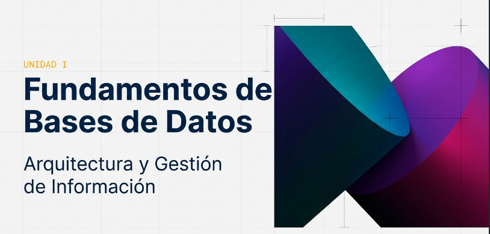
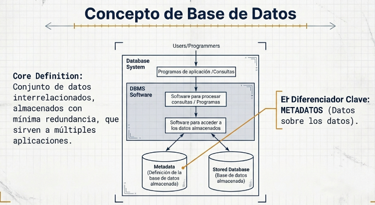
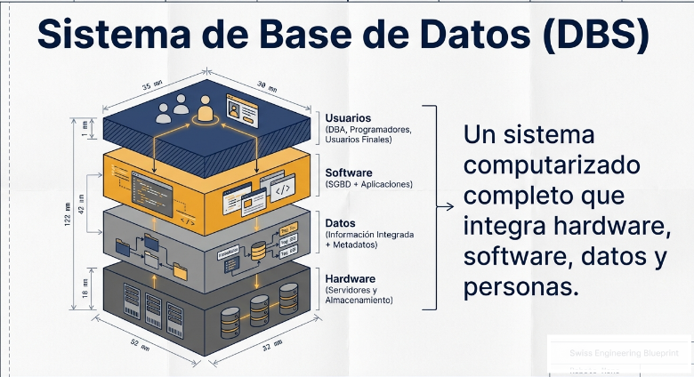
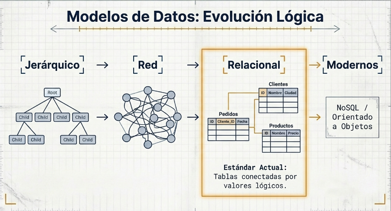
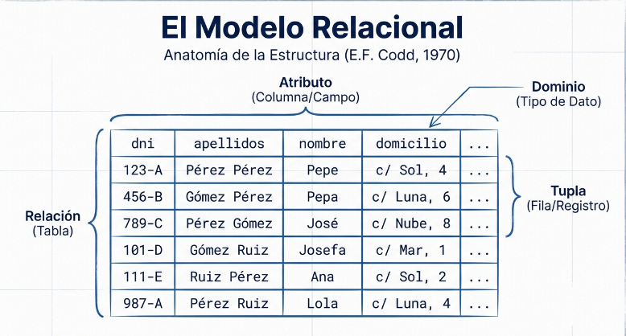
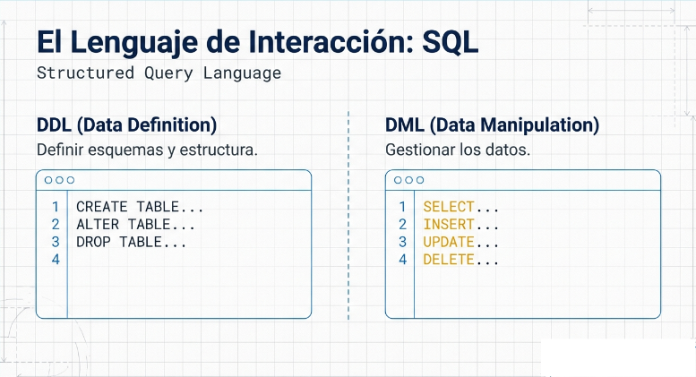
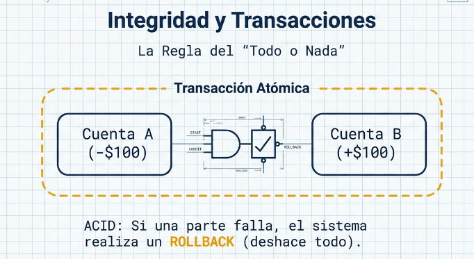
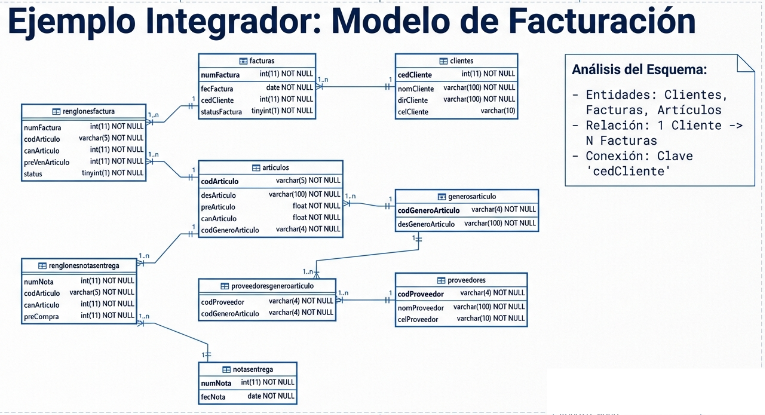
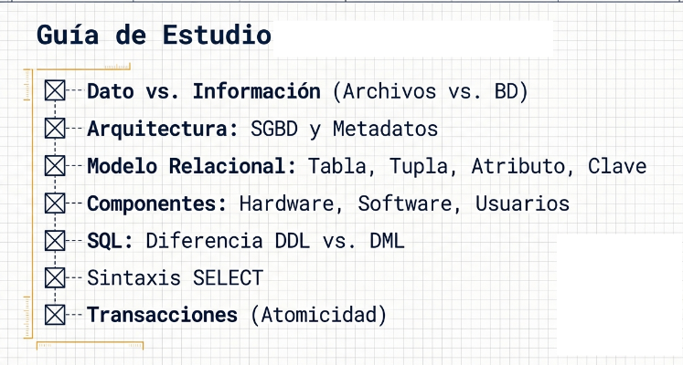
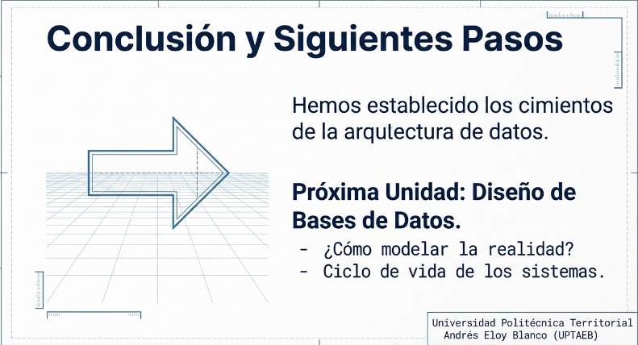

12 Puntos Esenciales para comprender la arquitectura, gestión y lenguaje SQL en sistemas de bases de datos modernos.

12
Puntos Clave
¿Por qué estudiamos bases de datos?
Las organizaciones modernas generan volúmenes masivos de datos. Sin una gestión adecuada, esta información se convierte en caos: duplicación, inconsistencia y pérdida de conocimiento valioso.
De la memoria volátil a la persistencia relacional moderna
Los primeros programas almacenaban datos en estructuras de memoria temporal. Al cerrar el programa, ¡toda la información se perdía!
⚠ Limitación: Datos volátiles (solo existen mientras el programa se ejecuta)
Los datos se guardan en archivos en disco. Persistencia lograda, pero con graves problemas de organización.
⚠ Problemas: Redundancia, dificultad de acceso concurrente, falta de seguridad
Estructura lógica independiente de la física. Datos integrados, seguros y accesibles por múltiples usuarios simultáneamente.
✓ Ventajas: Integridad, seguridad, independencia, acceso concurrente

"Colección de datos interrelacionados almacenados en conjunto sin redundancias perjudiciales, para servir a una o más aplicaciones de forma óptima."
— James Martín (1975)
Datos sobre los datos (el "catálogo" del sistema)
Programas separados del almacenamiento físico
Exactitud y protección de los datos
Acceso concurrente y seguro

La información almacenada
Equipos y almacenamiento
SGBD y aplicaciones
Personas que interactúan
Formas de estructurar y organizar los datos para representar la realidad

Organiza los datos en una estructura de árbol con relaciones padre-hijo (1:N). Cada nodo tiene un solo padre.
✓ Rápido para relaciones predecibles
✗ Rígido, difícil de modificar
• Usado en: IBM IMS (años 60)
Estructura de grafo que permite múltiples padres por nodo. Más flexible pero muy complejo.
✓ Permite relaciones N:N
✗ Complejidad de mantenimiento
• Estándar: CODASYL (1969)
Basado en tablas (relaciones) con filas y columnas. Independencia lógica-física total.
✓ Simple, potente, estándar actual
✓ SQL como lenguaje unificado
• Creador: E.F. Codd (1970)
Herramienta conceptual para diseño (Chen, 1976)
Combina BD con programación OO
Para big data y aplicaciones web escalables
Los 4 conceptos fundamentales de Codd (1970)
| Término Formal | Término Común | Definición | Ejemplo |
|---|---|---|---|
| Relación | Tabla | Estructura bidimensional de datos organizados en filas y columnas | Estudiantes |
| Tupla | Fila / Registro | Instancia única que representa un objeto completo en la tabla | (1, "Juan", "2005) |
| Atributo | Columna / Campo | Propiedad o característica específica del objeto almacenado | nombre, edad |
| Dominio | Tipo de Dato | Conjunto de valores válidos y permitidos para un atributo | INTEGER, VARCHAR |

Atributo (o conjunto) que identifica únicamente cada tupla en una relación. No puede ser NULL.
Atributo que referencia a la clave primaria de otra tabla, estableciendo una relación entre ellas.
Reglas que garantizan la integridad de los datos (NOT NULL, UNIQUE, CHECK, DEFAULT).
Los tres niveles que garantizan la independencia de datos
Vistas individuales para cada usuario o aplicación. Cada usuario ve solo lo que necesita.
Ejemplo: Un estudiante ve sus notas, un profesor ve todas las del curso
Esquema lógico global de toda la base de datos. Define tablas, relaciones y restricciones.
Ejemplo: Diagrama completo de todas las tablas del sistema
Representación física de los datos en disco. Índices, organización de archivos, compresión.
Ejemplo: B-trees, hashing, particionamiento
Los programas de aplicación no se ven afectados por cambios en la estructura lógica (tablas, columnas).
El nivel conceptual no se ve afectado por cambios en el almacenamiento físico (índices, organización).
El factor humano crítico. Sin el DBA, la información más valiosa de la organización está vulnerable. Es el responsable de garantizar disponibilidad, seguridad y rendimiento.
Gestión de usuarios y permisos
Backups y recuperación
Tuning de consultas
Esquema conceptual
Interactúan mediante aplicaciones predefinidas (ej: cajero bancario)
Conocen SQL y pueden crear consultas personalizadas
Desarrollan aplicaciones que acceden a la BD
Administran todo el sistema de BD
Structured Query Language - El lenguaje universal para bases de datos relacionales
Data Definition Language - Define y modifica la estructura del esquema de la base de datos.
Comandos principales:
CREATE • ALTER • DROP • TRUNCATE
Data Manipulation Language - Gestiona y manipula los registros almacenados en las tablas.
Comandos principales:
SELECT • INSERT • UPDATE • DELETE

DDL - Crear tabla
CREATE TABLE estudiantes (
id INT PRIMARY KEY,
nombre VARCHAR(100) NOT NULL,
edad INT CHECK (edad >= 16)
);DML - Insertar datos
INSERT INTO estudiantes
VALUES (1, 'María Pérez', 20);
SELECT * FROM estudiantes;Garantizando la exactitud y consistencia de la información

La clave primaria no puede tener valores NULL y debe ser única para cada tupla.
id INT PRIMARY KEY NOT NULL
Las claves foráneas deben referenciar valores existentes o ser NULL. Evita "huérfanos" en las relaciones.
FOREIGN KEY (dept_id) REFERENCES departamentos(id)
Los valores de un atributo deben pertenecer al dominio definido (tipo de dato y restricciones).
edad INT CHECK (edad >= 0 AND edad <= 120)
Múltiples usuarios accediendo simultáneamente sin conflictos
Una unidad lógica de trabajo que agrupa operaciones que deben ejecutarse completamente o no ejecutarse ninguna.
Ejemplo: Transferencia Bancaria
Atómica - Todo o nada
Consistente - Mantiene reglas
Aislada - Sin interferencias
Durable - Persistente
COMMIT
Confirma permanentemente los cambios de la transacción
ROLLBACK
Deshace todos los cambios de la transacción
SAVEPOINT
Crea un punto de retorno parcial
Criterios para un sistema verdaderamente relacional (1985)
Edgar F. Codd
Padre del Modelo Relacional (1970)
"Un sistema de gestión de bases de datos solo puede considerarse relacional si satisface estos doce criterios fundamentales."
El sistema debe usar SOLO sus capacidades relacionales para gestionar la base de datos.
Toda la información se representa explícitamente mediante valores en tablas.
Cada dato es accesible mediante: nombre de tabla + clave primaria + nombre de columna.
Soporte sistemático para valores NULL (diferente de cadena vacía o cero).
La estructura de la BD se almacena en tablas accesibles mediante el mismo lenguaje de consultas.
Debe existir un lenguaje con DDL, DML, control de transacciones y seguridad.
Las vistas teóricamente actualizables deben poder actualizarse en la práctica.
Soporte para INSERT, UPDATE y DELETE en todos los niveles de usuario.
Los cambios en el almacenamiento físico no afectan a los programas de aplicación.
Los cambios en tablas no requieren modificar los programas existentes.
Las restricciones de integridad se definen en el lenguaje, no en los programas.
Los usuarios no deben saber si la BD está distribuida en varias ubicaciones.
No puede haber acceso de bajo nivel que viole las reglas de seguridad e integridad.
Aplicando conceptos en un caso real del PNF
Crear el esquema para controlar los Proyectos del PNF
CREATE TABLE proyectos (
id INT PRIMARY KEY AUTO_INCREMENT,
titulo VARCHAR(255) NOT NULL,
comunidad VARCHAR(150),
estado VARCHAR(20)
);
CREATE TABLE estudiantes (
cedula INT PRIMARY KEY,
nombre VARCHAR(100) NOT NULL,
email VARCHAR(100) UNIQUE
);INSERT INTO proyectos
VALUES (1, 'Sistema Web', 'Lara', 'activo');
INSERT INTO estudiantes VALUES
(12345678, 'María', 'maria@uptaeb.edu.ve');
SELECT * FROM proyectos;
Preparación para el cuestionario (10%)
✍️ Practica SQL
Escribe CREATE TABLE e INSERT 3 veces.
🎯 Entiende conceptos
No solo memorices, comprende el por qué.


Ahora comprendes los fundamentos: evolución, modelo relacional, SQL, arquitectura ANSI/SPARC y las 12 reglas de Codd.